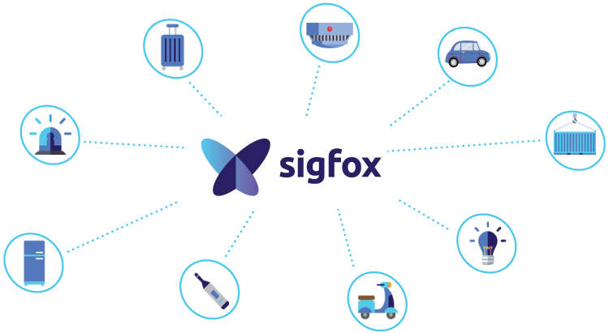
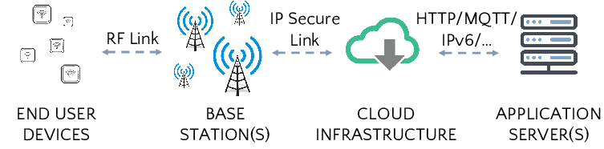
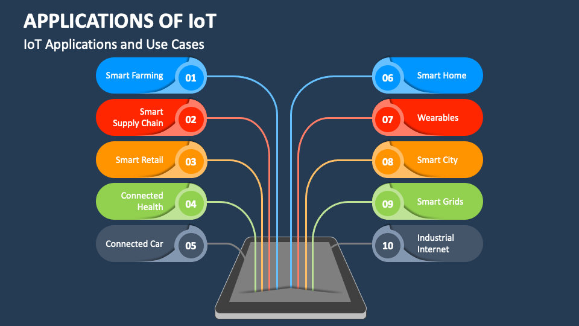
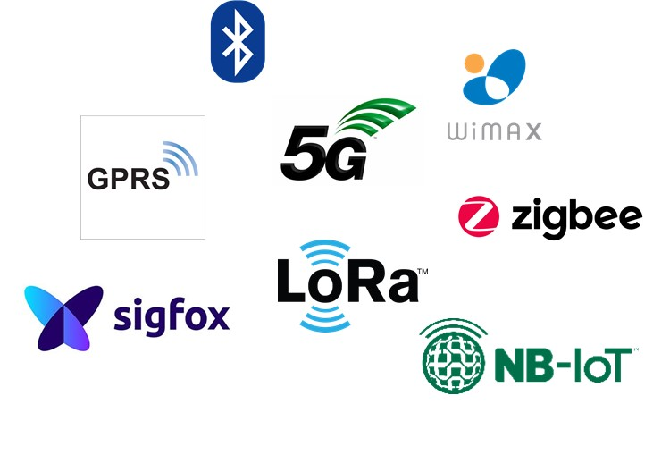
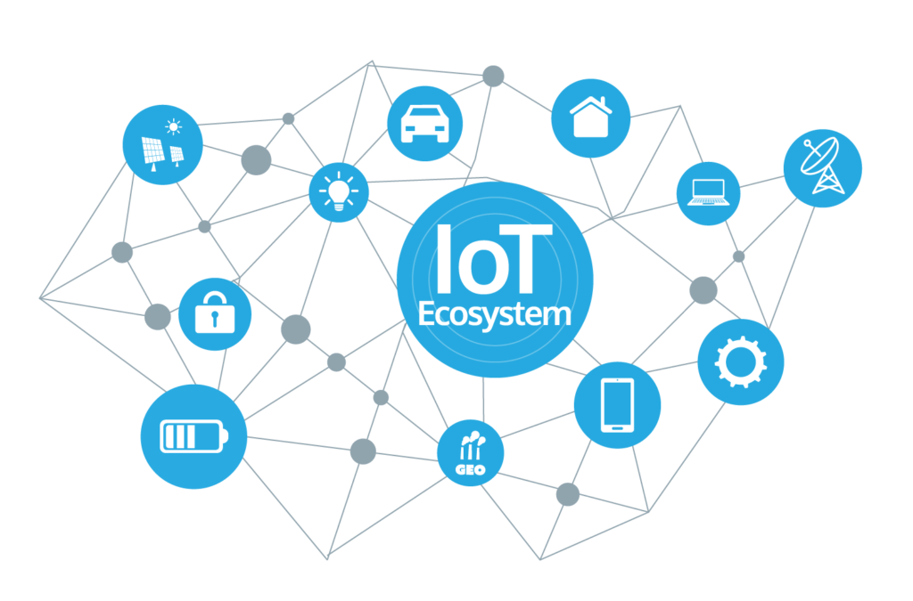

Introduction and Overview
Sigfox is a global communication technology and network provider that specializes in low-power, wide-area networks (LPWAN) for the Internet of Things (IoT). It offers a dedicated communication infrastructure designed to connect devices and sensors with minimal power consumption, making it well-suited for IoT applications.
Sigfox operates on the principle of ultra-narrowband technology, allowing it to achieve long-range communication with low power consumption. The network is designed to connect devices that transmit small amounts of data sporadically, making it suitable for applications such as asset tracking or monitoring. Sigfox aims to provide a cost-effective solution for connecting IoT devices.
Sigfox has established a global network that spans multiple countries, providing coverage for a wide range of IoT applications on an international scale. The communication protocol used by Sigfox is simple, making it easy to implement in various IoT devices. Sigfox is designed to be energy-efficient, enabling devices to operate for extended periods on battery power. The Sigfox network is scalable, allowing it to accommodate a growing number of connected devices. This scalability is essential as the IoT ecosystem continues to expand, with an increasing number of devices needing connectivity.
Sigfox expanded its network globally, establishing coverage in multiple countries. They partnered with various telecommunications operators and companies to extend its reach and offer a seamless IoT connectivity solution on an international scale. The company's technology gained traction in diverse industries, including agriculture, logistics, and smart cities, as the demand for IoT connectivity increased.
Technical Architecture and Functionality
IoT devices equipped with Sigfox connectivity integrate a small and energy-efficient module that includes a radio transceiver. This module is responsible for transmitting and receiving data using the Sigfox communication protocol. It also uses a proprietary ultra-narrowband radio protocol for communication between devices and base stations. The ultra-narrowband approach involves using very narrow frequency channels, which enables better propagation and penetration through obstacles.
Sigfox's network infrastructure includes a series of base stations strategically deployed to cover specific geographic areas. These base stations receive messages from IoT devices and forward them to the Sigfox Cloud, which serves as a central hub for processing and managing the information. The cloud infrastructure is responsible for tasks such as decoding messages, security checks, and routing data to the appropriate destination. Sigfox's backend systems include servers and databases responsible for handling device registrations, managing network sessions, and ensuring the integrity and security of the data.
Sigfox provides APIs that enable seamless integration with third-party applications and services. This allows developers and businesses to build applications, dashboards, and analytics tools that leverage the data transmitted by Sigfox-enabled devices. Security is a critical aspect of the Sigfox architecture. The protocol incorporates encryption mechanisms to secure the communication between devices and the Sigfox Cloud. Sigfox operates on a subscription-based model, where users subscribe to the service to connect their devices to the Sigfox network. Subscription management is handled through the backend systems.
Communication for IoT Devices
Sigfox is designed for IoT devices that typically transmit small amounts of data infrequently. Low data rate reduces the time each device spends communicating, leading to lower power consumption.
Sigfox operates in the sub-GHz frequency bands (868 MHz in Europe, 902 MHz in the United States), which are lower frequencies than those used by traditional cellular networks.
Sigfox employs synchronized communication between devices and base stations. This synchronization helps optimize network resources, reduce collisions, and enhance overall efficiency. Devices can transmit data at specific time slots, minimizing the time they spend actively communicating and conserving energy.
Modulation Techniques
Sigfox uses a proprietary modulation scheme known as Binary Phase Shift Keying (BPSK) for its communication. BPSK is a digital modulation technique that encodes data by varying the phase of the transmitted signal. In the case of Sigfox, the modulation is binary, meaning it has two possible phases. The BPSK modulation in Sigfox is designed to be robust, allowing for reliable communication over long distances and in challenging radio environments.
Use Cases and Applications
SigFox technology is revolutionizing many sectors with its versatility and efficiency. In the area of smart cities, SigFox facilitates connectivity for various applications like smart parking, waste management, and street lighting. Its low power consumption ensures a large battery life for devices, while its long-range connectivity ensures comprehensive coverage even in expanding urban environments.
In asset tracking, SigFox offers multiple advantages. Its ability to transmit data over long distances with minimal power consumption makes it the best choice for tracking valuable assets across wide areas. From logistics companies monitoring shipments to businesses safeguarding their equipment, SigFox ensures reliable and cost-effective tracking solutions.
Agriculture is another domain benefiting from SigFox technology. Farmers use SigFox-enabled sensors to monitor soil moisture levels, temperature, and crop health remotely. This data enables precise irrigation, optimal resource allocation, and early detection of potential issues, enhancing crop yields and reducing resource waste.
Furthermore, SigFox plays a crucial role in environmental monitoring. Its low-power, long-range capabilities enable the deployment of sensors in remote or hazardous locations for monitoring air and water quality, detecting pollution, and assessing environmental risks. This real-time data empowers decision-makers to take proactive measures to protect ecosystems and public health.
Comparison with Other IoT Technologies
In the landscape of IoT communication technologies, SigFox stands out alongside contenders like LoRaWAN, NB-IoT, and LTE-M, each offering distinct advantages and limitations.
SigFox's unique advantage lies in its ultra-low power consumption, enabling long-range connectivity with minimal energy requirements. This makes it ideal for applications requiring intermittent data transmission over vast areas, such as asset tracking in remote locations or environmental monitoring in rural areas.
However, SigFox's narrowband technology limits its bandwidth capacity compared to alternatives like LoRaWAN and LTE-M. This can pose challenges for applications demanding high data throughput or real-time communication.
LoRaWAN, on the other hand, offers greater flexibility in terms of bandwidth and scalability, making it suitable for diverse IoT deployments. NB-IoT and LTE-M leverage existing cellular infrastructure, providing robust connectivity and broader coverage, albeit with higher power consumption and infrastructure costs.
Scenarios where SigFox emerges as the preferred choice include applications prioritizing low energy consumption and long-range connectivity over high data throughput. For instance, in smart agriculture, SigFox excels in monitoring soil moisture levels across vast farmlands, where periodic updates suffice, and power efficiency is paramount.
Business Opportunities and Market Applications
From asset tracking to smart agriculture, SigFox enables businesses to streamline operations, enhance efficiency, and drive innovation. Service providers can capitalize on SigFox's capabilities to offer tailored solutions and expand their offerings in the IoT domain.
The current market adoption of SigFox technology showcases promising trends across industries and regions. Industries such as logistics, utilities, and healthcare are increasingly integrating SigFox for its reliability and scalability. Regions like Europe and North America lead in adoption, with emerging markets catching up swiftly.
Looking ahead, the future growth projections for SigFox remain robust. With an expanding IoT ecosystem and increasing demand for connected devices, SigFox is poised to witness exponential growth. Market trends indicate a shift towards sustainable and connected solutions, aligning perfectly with SigFox's value proposition.
In summary, SigFox presents abundant business opportunities, with its market adoption steadily gaining momentum. As businesses embrace IoT solutions for enhanced connectivity, SigFox stands at the forefront, driving innovation and transforming industries worldwide.
Security and Privacy Considerations
As SigFox technology continues to gain traction in the area of IoT solutions, addressing security and privacy concerns has become fundamental. One primary concern revolves around the protection of data transmitted over SigFox's network. SigFox employs various measures to safeguard this data, including encryption protocols and secure authentication mechanisms. These ensure that sensitive information remains confidential and protected from unauthorized access.
Additionally, SigFox implements robust security protocols at the network infrastructure level to prevent potential vulnerabilities and cyber threats. Regular security audits and updates further fortify the network against any possible risk, ensuring the integrity and reliability of data transmission.
Despite these measures, deploying SigFox-enabled IoT solutions securely requires proactive steps from stakeholders. Firstly, organizations must prioritize device security by regularly updating firmware, implementing strong authentication methods, and conducting thorough vulnerability assessments. Encrypting data both in transit and at rest adds an extra layer of protection against interception and unauthorized access.
Furthermore, organizations should establish clear security policies and procedures governing the usage and management of SigFox-enabled devices. Employee training on security best practices can mitigate risks associated with human error or negligence. Regular monitoring and auditing of network traffic and device activity help detect and respond to potential security incidents promptly.
Moreover, collaboration with trusted partners and vendors who prioritize security and compliance standards can enhance the overall security posture of SigFox-enabled IoT deployments. This includes selecting reputable device manufacturers and service providers that adhere to industry-standard security practices and protocols.
In conclusion, while SigFox technology offers numerous benefits in IoT deployments, ensuring security and privacy remains a critical consideration. By implementing robust security measures at both the network and device levels and fostering a culture of security awareness, organizations can leverage SigFox technology confidently while mitigating potential risks and safeguarding sensitive data.